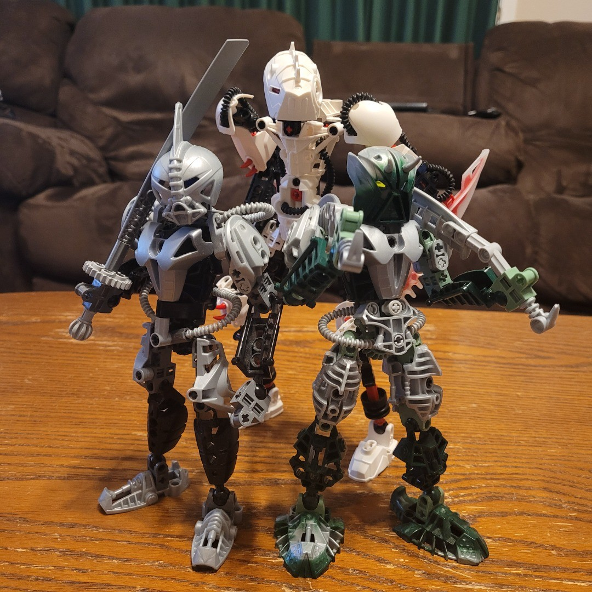
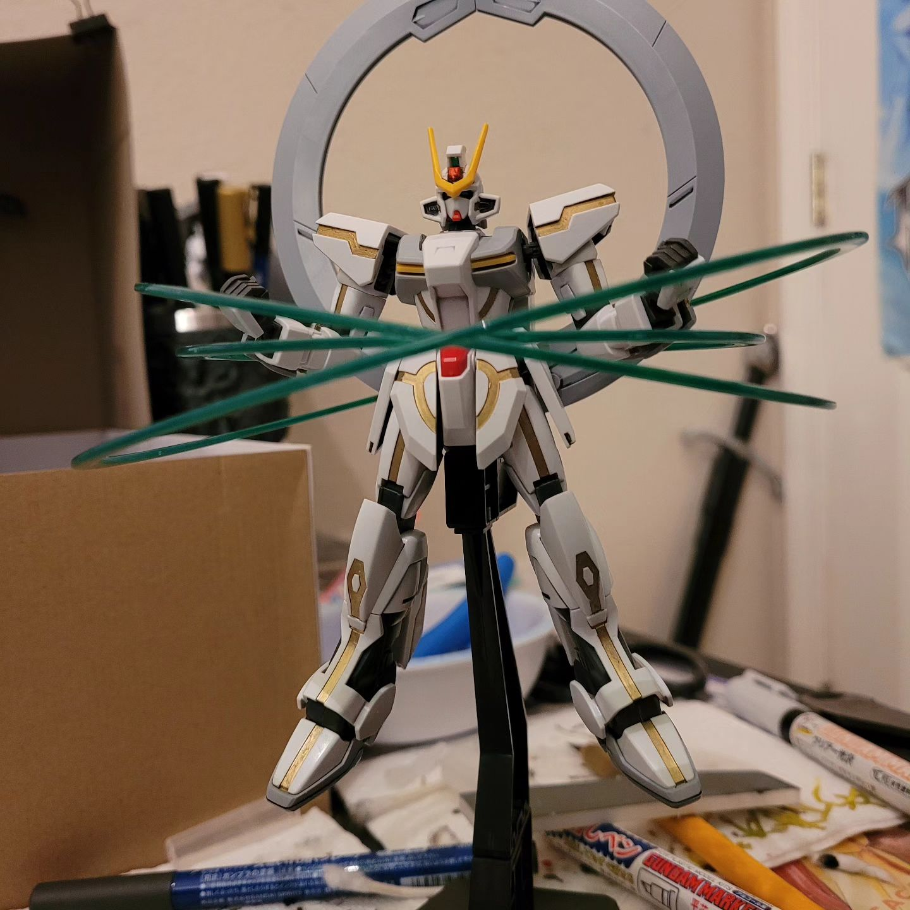
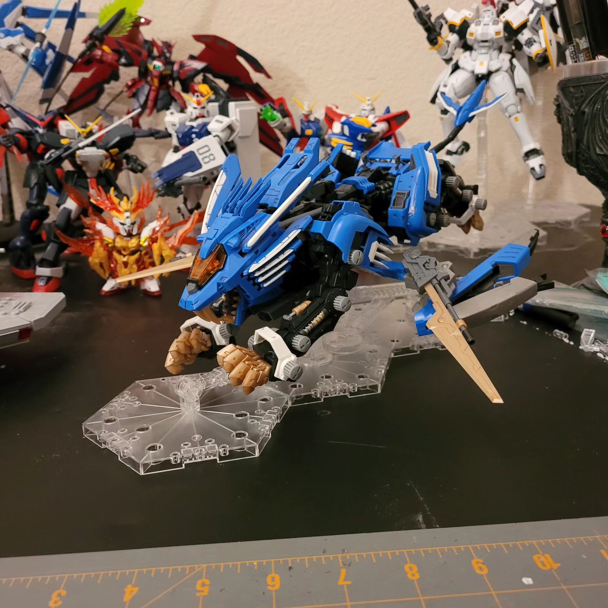

Jacob Griffith
Hi! My name is Jacob Griffith. I'm a student at Atlas School, specializing in Full-Stack Web Development.
I'm attending Atlas with the intent to learn the necessary skills to design and maintain websites professionally. Too often have I seen businesses with lackluster, difficult to use, functionally broken websites. My goal is to solve that problem! I am hoping to offer freelance web-design services in the near future, hopefully accquiring enough meaningful experience to be picked up by a company for more consistent income.
About Me
- Identity: Jacob Griffith (He/Him/His)
- DOB: May 29, 1999
- Alignment: Neutral Good
- Profession: Bookseller
- Strengths: Grilling, Games (Tabletop, Card, Video), Niche Trivia, Model Building
- Weaknesses: Bradford Pear Trees, Games (Field Sports), Sharp Objects, Bullets
Fun Facts
- I love music, and will not hesitate to sing along with a song I like! I love hearing and learning new songs, so please share any that you like. I can't guarantee that I'll like everything I hear, but I'm always interested in what other people listen to. Chances are, if I like a song, I'll learn the lyrics.
- I briefly ran games of Pathfinder RPG professionally! Of course, COVID-19 ruined that gig, but it was cool while it lasted. I still love to play and run TTRPGs, and I'm currently working on designing a setting for future campaigns I want to run.
- I have a vast adoration for Lego's BIONICLE line of products, and I build customs from time to time with the same parts I grew up playing with.
- Presently occupying my desire to build things, model kits have become a favorite of mine. I especially enjoy Bandai's Gundam plastic model kits (Gunpla) and Kotobukiya's ZOIDS plastic model kits.
Some Stuff I Built!


